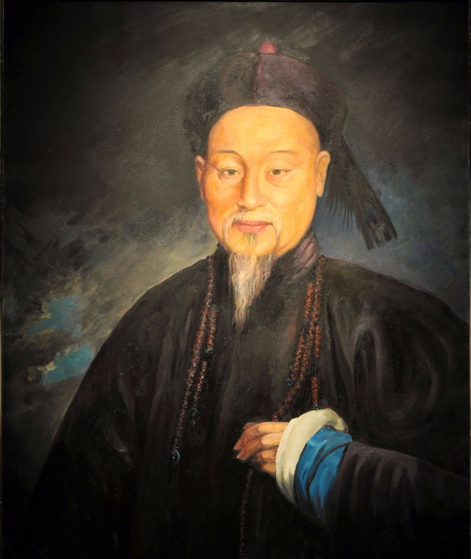
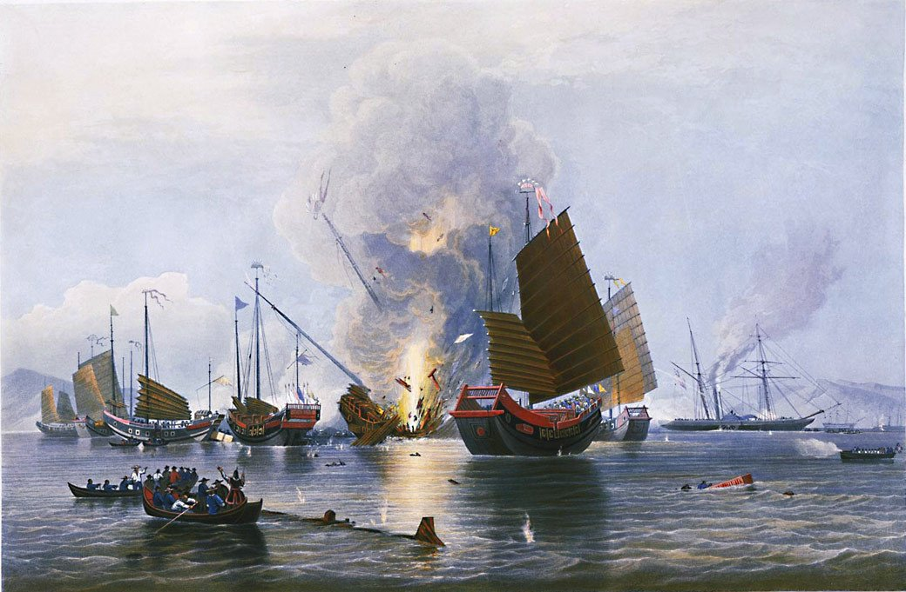
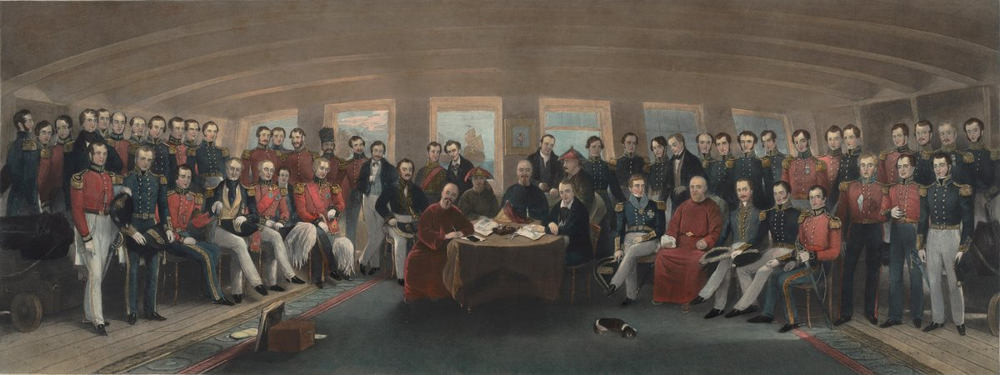
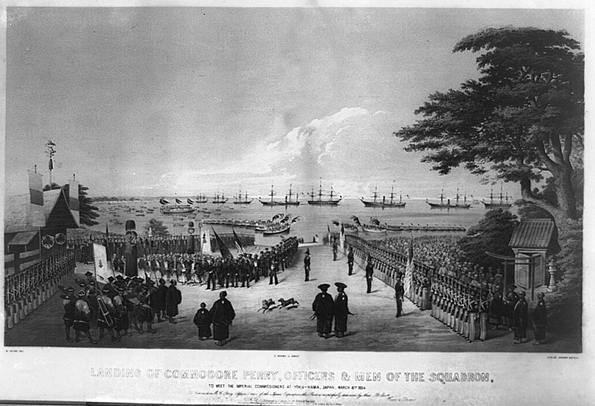
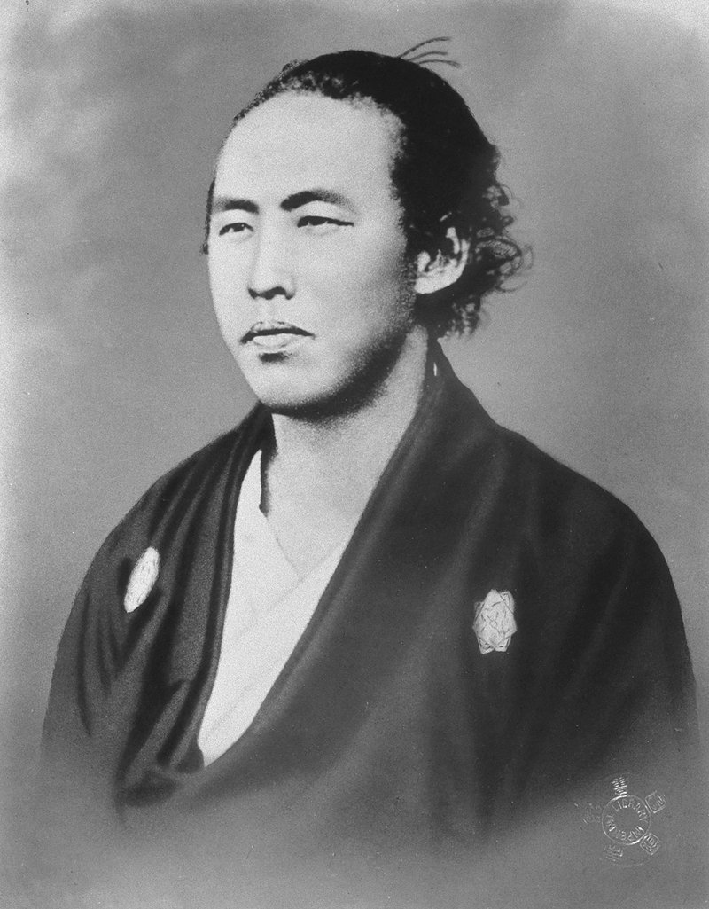
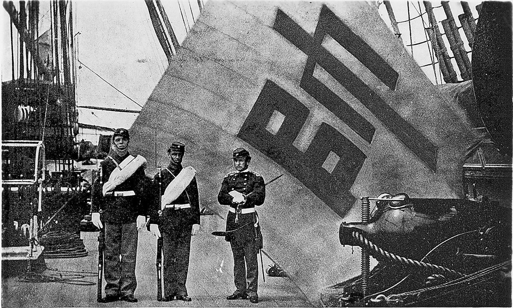

[동북아이야기②] 대포가 연 동아시아, 1842 난징·1854 가나가와·1882 제물포
영국은 몰수당한 아편을 빌미로 함대를 보냈고, 천하의 중심은 대포 앞에 무릎을 꿇었다
페리는 무력을 보여 준 뒤 기관차 모형을 내밀었다
같은 대포 앞에서 셋이 갈렸고, 갈린 것은 개항의 순서만이 아니었다
AI경제저널=김갑봉 기자 | 1839년 6월 3일, 청나라 흠차대신(황제가 보낸 전권 대신) 임칙서(林則徐)가 광저우(廣州) 아래 후먼(虎門) 바닷가에 구덩이를 팠다. 그는 영국 상인들에게 거둔 아편을 소금물과 석회에 섞어 바다로 흘려보냈다. 폐기는 6월 25일까지 23일 동안 이어졌다. 무게로 237만6254근, 1400톤 안팎이었다.
광저우에 인삼을 실은 미국 배가 처음 닿은 지 쉰다섯 해 뒤였다(이 연재 1편). 임칙서는 나라를 살리려 아편을 버렸다. 영국은 그 결단을 빌미 삼아 이듬해 함대를 보냈다. 대포 앞에서 청과 일본과 조선이 차례로 문을 열었다. 문을 연 순서도, 연 뒤에 걸어간 길도 달랐다.

은이 거꾸로 흐르다
19세기 초 중국은 세계에서 가장 큰 경제였다. 경제사 추계로 1820년 중국은 세계 생산의 32.9%를 차지했다. 유럽은 중국의 차와 비단과 도자기를 은을 주고 샀다. 중국이 유럽 물건을 살 일은 많지 않았다. 은은 한쪽으로만 흘렀다.
영국 동인도회사가 찾은 답이 인도산 아편이었다. 1765년 이전 한 해 200상자가 안 되던 아편이 1838년에는 4만상자로 불었다. 이제 은이 거꾸로 흘렀다. 은 1냥에 동전 1000문 안팎이던 값이 1834년 1350문을 넘었고, 1850년대에는 2000문을 넘었다. 동전을 벌어 은으로 세금을 내는 농민의 짐이 그만큼 무거워졌다. 1850년부터 남쪽에서 태평천국의 봉기가 번졌다.
학계에서는 인과를 두고 다툼이 있다. 아편 수입이 은 유출을 불렀다는 통설에 맞서, 은이 먼저 빠져나가 아편 수입이 커졌다는 연구도 나왔다. 다만 은값이 뛰면서 농민과 소작인의 살림이 무거워졌다는 데에는 여러 연구가 뜻을 같이한다. 아편은 사람만이 아니라 나라 살림의 밑바닥을 흔들었다.
도광제는 1838년 말 임칙서를 흠차대신으로 앉혀 광저우로 보냈다. 임칙서는 1839년 3월 10일 광저우에 닿았다. 3월 24일 그는 외국 상관(商館)을 군사로 둘러싸고 아편을 내놓을 때까지 상인들을 가뒀다. 영국 상무감독관 찰스 엘리엇은 사흘 만에 아편을 넘기기로 했다. 넘기기로 한 아편은 2만283상자였다. 당시 영국 화폐로 250만파운드어치라고 했다.
임칙서는 빅토리아 여왕에게 편지를 썼다. 영국은 자기 나라에서 아편을 엄하게 막으면서 왜 남의 나라에는 파느냐고 물었다. 편지가 여왕에게 닿았는지조차 분명하지 않다. 돌아온 것은 군함이었다.
장사를 지키러 온 함대
1840년 4월 런던 하원에서 서른 살 의원 윌리엄 글래드스턴이 일어섰다. 그는 기원이 이보다 부당하고, 이 나라에 이보다 영원한 치욕을 덮어씌울 전쟁을 알지 못한다고 말했다. 정부를 꾸짖는 동의안은 아홉 표 차로 부결됐다. 가해국 안에서도 이 전쟁이 무엇인지 아는 사람이 있었다.
1840년 6월 영국 원정군이 마카오 앞바다에 모였다. 군함 16척, 무장 증기선 4척, 수송선 28척, 병력 4000명 남짓이었다. 원정군은 북상해 7월 5일 저우산(舟山)을 점령했다. 아편 장사를 지키려고 나라가 군대를 보냈다. 이 전쟁을 아편전쟁이라 부르는 까닭이다.

1841년 1월 7일 영국군이 광저우 어귀 천비(穿鼻)포대를 쳤다. 포격에는 동인도회사의 철제 증기선 네메시스호가 섞여 있었다. 영국군은 38명이 다쳤다. 청군의 피해는 그보다 훨씬 컸다.
1842년 3월 청의 대군이 닝보(寧波) 탈환에 나섰다가 무너졌다. 영국군은 양쯔강(揚子江)을 거슬러 올랐다. 8월 초 영국 함대가 난징(南京) 성벽 아래 닻을 내렸다. 청은 더 버틸 수 없었다.
난징조약, 첫 번째 불평등조약
1842년 8월 29일 콘월리스호 선상에서 난징조약이 맺어졌다. 청의 기영(耆英)과 이리부(伊里布) 등, 영국의 헨리 포팅어가 서명했다. 청은 홍콩섬을 내주고 광저우·샤먼(廈門)·푸저우(福州)·닝보·상하이(上海) 다섯 항구를 열었다. 배상금은 은화 2100만달러였다. 두 해 뒤 같은 기영이 미국 특사 케일럽 커싱과 망하조약에 서명했다(이 연재 1편).

이듬해 1843년 10월 8일 후먼에서 맺은 추가조약에 영사재판권과 최혜국 대우가 들어갔다. 영사재판권, 관세자주권 상실, 최혜국 대우, 개항장 설정은 뒤에 동아시아 불평등조약을 가늠하는 잣대가 됐다. 그 틀이 난징에서 시작됐다.
조공과 책봉으로 이어 온 동아시아에 영국은 함포와 조약이라는 전혀 다른 문법을 들이밀었다. 국내 연구도 동아시아의 첫 개항인 난징조약이 이웃 나라의 개항에 큰 영향을 미쳤다고 본다. 대등한 척 꾸민 이 종이가 뒤에 일본과 조선 앞에 놓일 종이의 원본이 됐다.
임칙서는 전쟁 책임을 지고 신장(新疆) 이리(伊犁)로 쫓겨났다. 영국은 마약을 팔 권리를 대포로 지켰고, 청은 아편을 막으려다 나라의 문을 잃었다. 가해와 피해를 같은 무게로 적을 수 없는 까닭이다.
싸움은 한 번으로 끝나지 않았다. 1856년 영국이 다시 전쟁을 일으켰고 프랑스가 가세했다. 1858년 아편 수입은 합법이 됐고, 1860년 10월 영프 연합군은 베이징의 원명원(圓明園)을 약탈하고 불태웠다. 그해 11월 러시아도 청과 베이징조약을 맺어 우수리강 동쪽 땅을 차지했다. 러시아의 국경은 두만강까지 내려와 조선과 맞닿았다.
11년 뒤 우라가, 무력 뒤의 선물
1853년 7월 8일 에도만 어귀 우라가 앞바다에 검은 배 네 척이 나타났다. 미 해군 제독 매슈 페리가 이끈 함대였다. 일본 사람들은 구로후네(黒船), 검은 배라 불렀다. 페리는 대통령 친서를 받으라고 요구했다. 미국 국무부 역사실은 무력을 쓸 준비가 돼 있다는 이 과시가 막부에 친서를 받아들이게 했다고 적는다.
페리는 이듬해 1854년 2월 배를 더 끌고 돌아왔다. 3월 요코하마에서 증기기관차 모형을 둥근 궤도 위에 돌려 보이고 전신기와 망원경과 술을 선물했다. 대포를 먼저 보여 주고 선물을 나중에 내민 셈이다. 3월 31일 가나가와에서 미일화친조약이 맺어졌다. 시모다와 하코다테 두 항구가 열렸다.

첫 조약에는 미국만 누리는 최혜국 대우가 들어갔다. 4년 뒤 1858년 통상조약에서는 영사재판권과 협정관세까지 떠안았다. 일본은 대포 앞에서 대포를 배웠다. 그리고 스무 해 남짓 뒤 그 대포를 조선으로 돌렸다.
나라를 다시 빨래하겠다
페리 함대를 본 무사들 가운데 막부를 넘어뜨리고 나라를 새로 세우자는 이들이 나왔다. 도사번 무사 사카모토 료마(坂本龍馬)가 그런 사람이었다. 1863년 6월 29일(음력) 그는 고향 누이 오토메에게 편지를 썼다. 조슈번이 시모노세키에서 포격한 서양 배를 막부가 고쳐 준 데 분개한 편지였다. 편지에는 일본을 다시 한 번 빨래하겠다는 구절이 들어 있다. 편지 원본은 교토국립박물관이 소장한 일본 중요문화재다.

료마는 1865년 나가사키에서 가메야마샤추(亀山社中)를 꾸렸다. 일본 국립국회도서관은 이를 일본 첫 민간 무역회사이자 사설 해군 구실도 한 조직이라고 소개한다. 무역과 무력이 한 몸이었다.
조직은 뒤에 가이엔타이(海援隊)로 이름을 바꿨다. 료마는 앙숙이던 사쓰마번과 조슈번을 이어 1866년 삿초동맹을 맺게 했다. 1867년 11월 15일(음력) 교토의 간장 상점 오미야(近江屋)에서 나카오카 신타로(中岡慎太郎)와 함께 칼을 맞았다. 만 서른두 살 생일이었다.
1868년 메이지유신이 일어났다. 1871년 12월 이와쿠라 도모미(岩倉具視)가 이끈 사절단이 요코하마를 떠나 1873년 9월까지 1년 9개월 동안 미국과 유럽을 돌았다. 1881년 조선의 조사시찰단과 이 사절단을 견준 연구는, 10년 간격을 두고 두 사절단을 나란히 놓으면 조선의 취약점이 여실히 드러난다고 평가한다.
그보다 앞서 청은 1861년부터 양무운동을 폈다. 서양 기술은 받아들이되 제도는 지키자는 생각이었다. 이 생각의 뿌리는 흔히 풍계분(馮桂芬)에게서 찾는다. 1898년 장지동(張之洞)이 『권학편』에서 이를 체계로 묶었다. 양무를 이끈 북양대신 이홍장(李鴻章)은 뒷날 자신이 만든 육군과 해군이 종이로 바른 호랑이였다고 털어놓았다. 그가 걸어간 길의 끝은 이 연재 다음 편에서 이어 본다.
조선, 두 번 문을 열다
조선은 문을 두 번 열었다. 처음은 일본의 대포 앞이었다. 1875년 9월 20일 일본 군함 운요호가 강화도 초지진에 다가갔다. 조선 수비병이 포를 쏘자 운요호는 초지진에 보복 포격을 퍼부었고, 이어 제물포 건너편 영종진에 병사를 올렸다. 지금 인천공항이 들어선 영종도다. 일본군은 대포 36문을 빼앗고 진을 불태웠으며, 일본 쪽 피해는 경상자 2명이었다.
1876년 2월 27일 지금의 인천 강화군 강화도에서 조일수호조규가 맺어졌다. 일본 오쿠보 도시미치(大久保利通) 정권은 페리의 선례를 본떠 포함외교로 조선의 문을 열려 했다는 분석이 있다. 스물두 해 전 일본이 당한 방식을 일본이 조선에 옮겨 왔다.

서양에는 문을 닫았다. 페리의 나라 미국도 1871년 6월 군함 다섯 척으로 강화도를 쳤다. 광성보를 지키던 어재연이 전사했고, 미군은 그의 수자기를 빼앗아 갔다. 미군 기록으로 조선군 350명, 조선 기록으로 57명이 전사했고, 미군 전사자는 3명이었다.
흥선대원군은 1866년 병인양요에 이어 1871년 신미양요를 치르며, 그해 음력 4월 서울과 각지 요충지에 척화비를 세웠다. 서양 오랑캐가 쳐들어오는데 싸우지 않으면 화친이고, 화친을 주장하면 나라를 파는 것이라고 새겼다. 대원군은 안으로는 개혁가였다. 서원 47곳만 남기고 정리했고 양반 호에도 군포를 물리는 호포를 시행했다. 그러나 당백전으로 물가가 흔들렸고, 1873년 최익현의 상소를 계기로 물러났다.
서양에 문을 연 것은 1882년이었다. 다리를 놓은 이는 청의 이홍장이었다. 국내 연구는 이홍장이 남으로 일본을 누르고 북으로 러시아의 남하를 막을 나라, 조선이 청의 속방임을 인정해 줄 나라를 찾았다고 분석한다. 1882년 5월 22일 제물포 화도진(체결 장소로 전해 오는 곳)에서 조선의 신헌·김홍집과 미국의 로버트 슈펠트가 조미수호통상조약에 서명했다.
마흔 해 전 대포 앞에 무릎을 꿇은 나라가 이제 이웃의 개항을 주선했다. 그러나 조약 첫머리에 조선이 청의 속국임을 밝히려던 청의 시도는 슈펠트가 막았다. 대신 속방이라는 말은 조선 국왕이 미국 대통령에게 보낸 별도 조회문에 담겼다. 청은 그해 10월 조중상민수륙무역장정을 맺어 오히려 속방 지배를 굳혔다.
조약은 관세자주권을 존중한다고 적었다. 그러나 이듬해 1883년 조선이 일본·영국과 맺은 조약의 세율이 낮아지자, 미국은 최혜국 대우 조항을 근거로 그 혜택을 차례로 나눠 가졌다. 조선이 지키려던 관세는 1883년을 넘기지 못했다.
조약 첫 조에는 제3국이 조선을 부당하게 대하면 미국이 거중조정(居中調停, 사이에서 화해를 주선함)에 나선다는 약속도 들었다. 23년 뒤 고종은 이 조항을 들어 미국에 도움을 청했다. 1905년 10월 16일 시어도어 루스벨트 대통령에게 쓴 친서는 미국 선교사 호머 헐버트가 일제의 감시를 피해 서울의 미국인 지인을 거쳐 외교행랑에 실어 워싱턴으로 보냈다.
헐버트는 을사늑약이 맺어진 뒤인 11월 25일에야 국무장관 엘리후 루트를 만나 친서를 전했다. 미국은 움직이지 않았다. 그 친서 원본이 2026년 4월 미국 의회도서관에서 121년 만에 확인됐다.
1882년 7월(음력 6월) 임오군란이 일어나자 대원군이 잠시 권력을 되찾았다. 청군은 그를 붙잡아 바오딩(保定)에 3년 동안 가뒀다. 대원군은 1885년 10월(음력 8월)에야 돌아왔다.
개항의 순서보다 무거운 것
1842년 난징, 1854년 가나가와, 1876년 강화도와 1882년 제물포. 청이 먼저, 일본이 다음, 조선이 마지막이었다. 흔히 늦게 열어서 망했다고들 한다. 그러나 순서만으로는 설명이 되지 않는다.
청은 가장 먼저 열었지만 반식민지가 됐다. 일본이 문을 연 1850~60년대, 영국은 인도 항쟁과 중국을 상대로 한 두 번째 아편전쟁에 힘을 쏟고 있었다. 일본은 그사이 1860년 조약 비준 사절단을 미국에 보냈고, 1871년에는 이와쿠라 사절단을 보내 배웠다. 조선은 문을 열자마자 대포를 배운 일본과 종주권을 다잡은 청 사이에 끼었다.
조선도 협상했다. 1880년대 초 수신사와 조사시찰단을 거치며 조약의 불평등성을 깨달았고, 조미조약에서 관세를 지키려 했다. 그러나 최혜국 대우 조항이 그 성과를 이듬해 무너뜨렸다. 갈린 것은 문을 연 순서도, 배움의 크기만도 아니었다. 문 밖에 누가 서 있었느냐였다.
조선 정부가 끝까지 막으려 한 것도 있었다. 국내 연구는 조선 정부가 아편전쟁의 교훈을 보고 외세 침략보다 아편 유입을 더 경계했다고 분석한다. 1876년 이래 개항 협상마다 아편을 막으려 애썼다는 것이다. 대포를 막을 힘은 없었어도 이웃의 상처는 읽고 있었다.
2026년은 강화도조약 150주년이다. 인천시립박물관은 4월 1일부터 5월 10일까지 특별전 「인천, 세계의 바다에 뛰어들다」를 열었다. 조약을 맺은 조선 대표 신헌의 『심행일기』 상·하권이 이 전시에서 처음 한자리에 모였다. 10월 16~17일에는 조미조약을 맺은 자리로 전해 오는 화도진(제물포구 화수동) 일대에서 제37회 화도진축제가 열렸다.
조미조약 이듬해인 1883년 제물포가 문을 열었다. 오늘의 인천항이다. 운요호가 불태운 영종진이 있던 영종도에는 인천공항이 섰다. 150년 전 이 바다는 남이 쓴 조약문에 도장을 찍던 자리였다. 지금 이 바다 위에서 무엇을 열고 무엇을 지킬지, 그 조약문은 누가 쓰고 있는가.
※ 『동북아이야기』는 조선·한국과 중국, 일본, 러시아, 미국이 얽혀 온 동북아 200여 년을 인물과 사건으로 읽는 84편 기획연재입니다. 매주 일요일 이어지며 단행본 출간을 준비하고 있습니다. 다음 편은 개항 뒤 30년, 세 나라가 갈린 길을 다룹니다.
참고문헌
- 강진아(2016), 「동아시아의 개항: 난징조약에서 강화도 조약까지」, 『현대사광장』 7권, 대한민국역사박물관, 56~82쪽. https://kiss.kstudy.com/Detail/Ar?key=3469519
- 김종학(2017), 「1876년 조일수호조규 체결과정의 재구성: '심행일기'와 몇 가지 미간문헌에 기초하여」, 『한국정치학회보』 51권 5호, 185~215쪽. https://www.riss.kr/link?id=A104502128
- 김재선(2012), 「李鴻章의 對外政策 硏究: 朝鮮 屬國名分論을 중심으로」, 『동국사학』 53호, 437~472쪽. https://www.kci.go.kr/kciportal/ci/sereArticleSearch/ciSereArtiView.kci?sereArticleSearchBean.artiId=ART001734094
- 최덕규(2020), 「미국해군제독 슈펠트와 조미수교: 동아시아 국제관계를 중심으로(1880-1882)」, 『군사』 115호, 국방부군사편찬연구소, 167~213쪽. https://www.kci.go.kr/kciportal/ci/sereArticleSearch/ciSereArtiView.kci?sereArticleSearchBean.artiId=ART002593687
- 한승훈(2018), 「「조미수호통상조약(1882)」 체결 당시 미국의 '공평함'이 갖는 함의: 조선의 관세자주권 확보 시도와 좌절을 중심으로」, 『전북사학』 52호, 195~226쪽. https://www.earticle.net/Article/A325724
- 허동현(2006), 「19세기 한·일 양국의 근대 서구 문물 수용 양태 비교 연구: 朝士視察團과 이와쿠라(岩倉)사절단을 중심으로」, 『동양고전연구』 24, 257~280쪽. https://www.riss.kr/link?id=A82622059
- 한승훈(2019), 「19세기 후반 동아시아 3국의 불평등조약 체제 극복 가능성과 한계」, SGRA 국사대화 4 발표문. https://www.aisf.or.jp/sgra/wp-content/uploads/2019/05/Format_AKKokushi4_Fullpaper_HanSeunghoon%E9%9F%93%E6%89%BF%E5%8B%B2-1.pdf
- 박강(2014), 「개항기(1876~1910) 조선의 아편확산과 청국 상인」, 『한국민족운동사연구』 80호, 5~44쪽. https://www.kci.go.kr/kciportal/ci/sereArticleSearch/ciSereArtiView.kci?sereArticleSearchBean.artiId=ART001912055
- Alejandra Irigoin(2013), "A 'Trojan Horse' in Daoguang China? Explaining the flows of silver in and out of China", LSE Economic History Working Papers No.173/13. https://www.lse.ac.uk/asset-library/information/wp173.pdf
- Angus Maddison(2001), The World Economy: A Millennial Perspective, OECD, 표 B-20. https://docenti-deps.unisi.it/sergiocesaratto/wp-content/uploads/sites/26/2020/09/Maddison.pdf
- Tony Little, "Politics, Principles and Priorities: Gladstone and the Chinese opium trade", Journal of Liberal History 126(2025년 봄), 22~33쪽. https://liberalhistory.org.uk/wp-content/uploads/2025/05/126-Little-Gladstone-opium-trade.pdf
- 일본 외무성, 「日米修好通商条約批准書交換証書」 외교사료관 전시 해설. https://www.mofa.go.jp/mofaj/annai/honsho/shiryo/akebono/11.html
- 러시아 대통령도서관, "The Convention of Peking of 1860 is concluded". https://www.prlib.ru/en/node/619718
- 중러 베이징조약(1860.11.14) 원문, 홍콩 국제조약문 데이터베이스. https://hkintexts.histsyn.com/page/986977
- 「坂本龍馬」, 고토뱅크(코토뱅크). https://kotobank.jp/word/%E5%9D%82%E6%9C%AC%E7%AB%9C%E9%A6%AC-188756
- 한국민족문화대백과사전, 「운요호 사건」, 「신미양요」. https://encykorea.aks.ac.kr/Article/E0040358 , https://encykorea.aks.ac.kr/Article/E0032961
- W. Laird Clowes, The Royal Navy: A History from the Earliest Times to the Present, vol.6(1901) 아편전쟁 대목 전사(轉寫). https://pdavis.nl/China.htm
- 미국 국무부 역사편찬실, "The United States and the Opening to Japan, 1853", Milestones. https://history.state.gov/milestones/1830-1860/opening-to-japan
- "Treaty of Nanjing (Nanking), 1842"(조약 원문), 미국 서던캘리포니아대 미중연구소. https://china.usc.edu/node/2127
- 일본 문화청 문화유산온라인, 「坂本龍馬関係書状 文久三年六月二十九日 坂本乙女あて」. https://online.bunka.go.jp/heritages/detail/541575
- 일본 국립국회도서관, 「근대 일본인의 초상」 사카모토 료마. https://www.ndl.go.jp/portrait/pickup/029
- 한국민족문화대백과사전(한국학중앙연구원), 「조미수호통상조약」, 「흥선대원군」, 「척화비」, 「서원철폐」, 「당백전」. https://encykorea.aks.ac.kr/Article/E0051767 , https://encykorea.aks.ac.kr/Article/E0046384 , https://encykorea.aks.ac.kr/Article/E0056758 , https://encykorea.aks.ac.kr/Article/E0076385 , https://encykorea.aks.ac.kr/Article/E0013889
- "Opium Wars"(1·2차 아편전쟁, 1858년 합법화), "First Opium War", Encyclopaedia Britannica. https://www.britannica.com/topic/Opium-Wars , https://www.britannica.com/event/First-Opium-War
- 林則徐, 「Letter to Queen Victoria」(1839) 영역문과 해설, 미국 서던캘리포니아대 미중연구소. https://china.usc.edu/node/2126
- "Lin Zexu", "Self-Strengthening Movement", "Harris Treaty", Encyclopaedia Britannica. https://www.britannica.com/biography/Lin-Zexu , https://www.britannica.com/event/Self-Strengthening-Movement , https://www.britannica.com/event/Harris-Treaty
- "Treaty of Wang-Hea(망하조약)" 원문, 일본 정책연구대학원대학·도쿄대 「세계와 일본」 데이터베이스. https://worldjpn.net/documents/texts/pw/18440703.T1E.html
- 홍콩 중국문화연구원(CHI Culture), 1839년 3월 상관 봉쇄 해설. https://chiculture.org.hk/en/node/437
- nippon.com, 페리 내항과 1854년 재방문 해설(japan-topics g02197). https://www.nippon.com/en/japan-topics/g02197/
- 陈新宇, 「张之洞体用思想的法律困境」, 爱思想. https://www.aisixiang.com/data/115484.html
- tabi-mag, 교토 오미야(近江屋) 터 안내. https://tabi-mag.jp/ky0411/
- 인천시, 「역사자료관 제13회 학술대회 개최」(조미수호통상조약 체결 장소), 2015.11.11. https://www.incheon.go.kr/IC010101/view?nttNo=6075
- William S. Atwell, Man-houng Lin, China Upside Down(2006) 서평, Journal of Chinese Studies 48(홍콩중문대, 2008), 575~580쪽. https://www.cuhk.edu.hk/ics/journal/articles/v48p575.pdf
- 영국 왕립박물관 그리니치, 「Taking the Island of Chusan by the British, July 5th 1840」 소장품 해설. https://www.rmg.co.uk/collections/objects/rmgc-object-139133
- 홍콩 중국문화연구원(CHI Culture), 「Opium trade」·「Destruction of opium」 사진 이야기. https://chiculture.org.hk/en/photo-story/106 , https://chiculture.org.hk/en/photo-story/107
- MIT Visualizing Cultures, 「Black Ships & Samurai」. https://visualizingcultures.mit.edu/black_ships_and_samurai/bss_essay07.html
- 인천시립박물관, 강화도조약 150주년 특별전 「인천, 세계의 바다에 뛰어들다」 안내, 2026.3.20. https://www.incheon.go.kr/museum/MU060103/3066100
- 「虎门销烟鲜为人知的细节」, 人民周刊(인민일보사), 2016.5.4. https://paper.people.com.cn/rmzk/html/2016-05/04/content_1676195.htm
- 「苟利国家生死以 岂因祸福避趋之」, 中国共产党新闻网(원출처 中国纪检监察报), 2026.7.10. http://cpc.people.com.cn/n1/2026/0710/c461783-40757570.html
- 朱伟岳, 「史话》美国人对林则徐观感──未酬邦国中兴之60」, 中国时报, 2023.3.19. https://www.chinatimes.com/cn/opinion/20230319000009-262107
- Robert Neff, "The return of Heungseon Daewongun", 코리아타임스, 2022.7.23. https://www.koreatimes.co.kr/amp/opinion/20220723/the-return-of-heungseon-daewongun
- "Gojong's 1905 letter to US president found after 121 years", 코리아타임스, 2026.5.7. https://www.koreatimes.co.kr/lifestyle/others/20260507/gojongs-1905-letter-to-us-president-found-after-121-years
- 杨健, 「语录侦探｜"裱糊匠"生平之快事也」(『庚子西狩丛谈』 인용), 澎湃新闻, 2019.5.30. https://www.thepaper.cn/newsDetail_forward_3557409
- "The Iwakura Mission", nippon.com. https://www.nippon.com/en/japan-topics/g00680/
- 이수지, 「고종 '을사늑약 저지' 친서, 121년 만에 美 의회 도서관서 발견」, 뉴시스, 2026.5.6. https://mobile.newsis.com/view/NISX20260506_0003617781
- 김창수, 「[경인칼럼] 인천개항 140주년을 돌아본다」, 경인일보, 2022.12.20. https://www.kyeongin.com/article/1619475
- 박경호, [전시리뷰] 인천시립박물관 강화도조약 150년 특별전, 경인일보, 2026.4.5. https://www.kyeongin.com/article/1761367
- 「"역사에 체험·공연 더하니 13만 발길" 제물포구 화도진축제 '흥행'」, 위키트리, 2026.10.19. https://www.wikitree.co.kr/articles/1167315
[사진 출처]
- [사진1] Lam Qua, 「Portrait of Lin Zexu」, 위키미디어 공용, 퍼블릭 도메인. https://commons.wikimedia.org/wiki/File:Portrait_of_Lin_Zexu.jpeg
- [사진2] Edward Duncan, 「Destroying Chinese war junks」(1843), 위키미디어 공용, 퍼블릭 도메인. https://commons.wikimedia.org/wiki/File:Destroying_Chinese_war_junks,_by_E._Duncan_(1843).jpg
- [사진3] John Platt·John Burnet, 「The Signing of the Treaty of Nanking」(1846), 브라운대 앤 S. K. 브라운 군사 컬렉션, 위키미디어 공용, 퍼블릭 도메인. https://commons.wikimedia.org/wiki/File:The_Signing_of_the_Treaty_of_Nanking.jpg
- [사진4] Wilhelm Heine, 「Landing of Commodore Perry... at Yoku-hama March 8th, 1854」, 미국 의회도서관 LC-USZ62-3319, 위키미디어 공용, 퍼블릭 도메인. https://commons.wikimedia.org/wiki/File:Commodore_Perry_expedition_LOC_LC-USZ62-3319.jpg
- [사진5] 작자 미상, 「Sakamoto Ryoma」, 일본 국립국회도서관 「근대 일본인의 초상」 datas/89(『近世名士写真 其2』), 위키미디어 공용, 퍼블릭 도메인. https://commons.wikimedia.org/wiki/File:Sakamoto_Ryoma.jpg
- [사진6] Felice Beato, 「Sujagi」(1871년 6월), 위키미디어 공용, 퍼블릭 도메인. https://commons.wikimedia.org/wiki/File:Sujagi.jpg